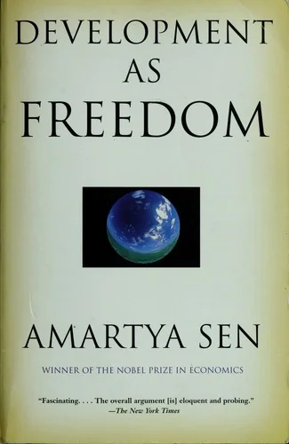
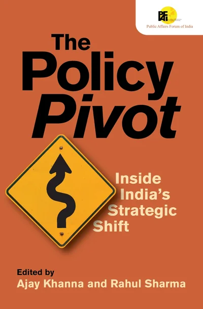

What I’m reading, and what shaped me.
J. M. Roberts & Odd Arne Westad (sixth edition)
J. M. Roberts' single-volume history of humankind, from our earliest ancestors to the present day, revised and extended by Odd Arne Westad for the latest edition. It follows how civilisations, empires, ideas, and economies rose, met, and reshaped one another across every continent.
Ray Dalio
Dalio studies the rise and fall of reserve currencies and economic systems over 500 years of history. The core argument, that the US is at a late-stage debt cycle similar to previous great powers before their decline, is both unsettling and fascinating. He traces how the same confluence of conditions, massive debt, political polarisation, and a rising challenger power, has preceded every major imperial transition in the past five centuries. Essential reading for anyone thinking seriously about global economics and geopolitics.
George R.R. Martin
The series that made fantasy feel like political science. Martin's world is a masterclass in how power and consequence actually work, far more honest about human nature than most non-fiction. No character is purely good or evil; everyone is navigating incentives and the constraints of the institutions around them. The politics of Westeros have genuinely taught me much about how power corrupts and how alliances form and fracture. Chaos is a ladder.

Amartya Sen
Sen's central argument is that development should be measured by the real freedoms people actually enjoy, the capability to be educated, healthy, heard, and free from want, rather than by income or GDP alone. Recasting poverty as a deprivation of capabilities, and not merely a shortage of cash, has quietly rearranged how I judge my own work, from Edunomix to the research. It is the rare economics book that reads like moral philosophy without ever going soft on the economics.

Ajay Khanna & Rahul Sharma
Published to mark eighteen years of the Public Affairs Forum of India (PAFI), this is a collection of 25 essays from leading voices across Indian business, government, academia, and civil society. Contributors examine the shifting dynamics of India's policy ecosystem, where governance is becoming more participatory and public affairs more central to democratic accountability. A timely and insightful read given my own work at the intersection of policy and finance.
for the books and films I’ve finished, see books and movies.